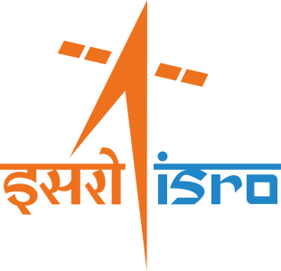

🌌 अंतरिक्ष समाचार | Space News

दिनांक: ३०-०९-२०२६ • Date: 30-09-2026 • Time: 12:48 IST • 10 Updates
Reviewer Access

ISRO Conducts National Meet on 'Scientific Exploration of the Moon through Chandrayaan Missions' ISRO
Nilekani Panel Consults Ex-ISRO Chief On NTA Reforms TradingView

ISRO IPRC Recruitment 2026 Notification Out For 22 Posts, Apply Online Link PW

NVS-03: Why India’s armed forces eagerly await this navigation satellite from ISRO theweek.in

India–France Third Joint Satellite Progresses as Gaganyaan Support Continues The Policy Edge

Lesjöfors supplies springs and components for ISRO space docking mission torque-expo.com

Photos taken using a microscope reveal the colorful, kaleidoscope-like crystal structure of a new NASA-made material that could be used for manufacturing during future space missions. Developed at NASA's Glenn Research Center in Cleveland, the material could be created directly on the moon or Mars, allowing NASA to pack fewer supplies—saving weight and reducing launch costs.

A commercial mission to boost NASA's Neil Gehrels Swift Observatory ended without raising the spacecraft's orbit, but the agency and Katalyst Space gained experience that will benefit future in-space servicing programs.

NASA is throwing extra support and money behind Boeing's troubled astronaut capsule to get it fixed and flying again as soon as possible.

Look up at the night sky with the naked eye and it may seem like it rarely changes. Yet the universe is in constant flux. Stars drift through space, orbiting the center of the Milky Way as planets orbit them. They rotate, showing spots on their surfaces and sometimes producing violent outbursts that affect planetary atmospheres much like solar storms produce auroras on Earth.